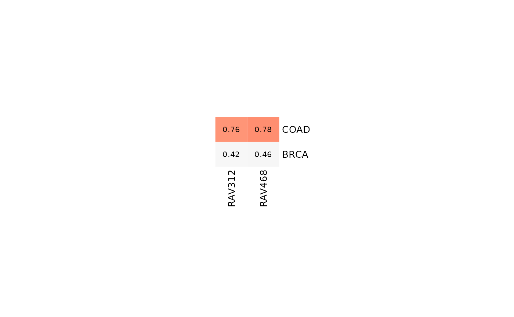
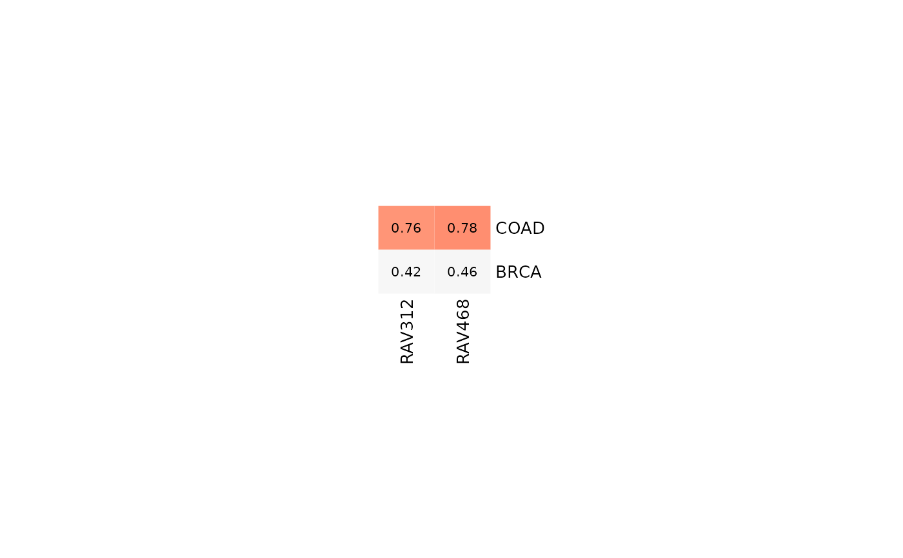

This function subsets validate outputs with different criteria
and visualize it in a heatmap-like table.
Arguments
- val_all
An output matrix from
validatefunction with the parameterlevel = "max". Subset of this matrix is plotted as a heatmap usingHeatmap- RAVmodel
PCAGenomicSignatures-class object. RAVmodel used to prepare
val_allinput.- ind
An integer vector. If this parameter is provided, the other parameters,
num.out, scoreCutoff, swCutoff, clsizeCutoffwill be ignored and the heatmap table containing only the provided index will be printed.- num.out
A number of highly validated RAVs to output. Default is 5. If any of the cutoff parameters are provided,
num.outor the number of filtered RAVs, whichever smaller, will be chosen.- scoreCutoff
A numeric value for the minimum correlation (not include). If
val_allinput is from multiple studies, the default is 0.7 and this is the only cutoff criteria considered:swCutoffandclsizeCutoffwill be ignored.- swCutoff
A numeric value for the minimum average silhouette width.
- clsizeCutoff
A integer value for the minimum cluster size.
- breaks
A numeric vector of length 3. Number represents the values assigned to three colors. Default is
c(0, 0.5, 1).- colors
A character vector of length 3. Each represents the color assigned to three breaks. Default is
c("white", "white smoke", "red").- column_title
A character string. Provide the column title.
- row_title
A character string. Provide the row title.
- whichPC
An integer value between 1 and 8. PC number of your data to check the validated signatures with. Under the default (
NULL), it outputs top scored signatures with any PC of your data.- filterMessage
A logical. Under the default
TRUE, any output RAV belong to the filtering list will give a message. Silence this message withfilterMessage=FALSE. You can check the filter list usingdata("filterList").- ...
any additional argument for
Heatmap
Value
A heatmap displaying the subset of the validation result that met the
given cutoff criteria. If val_all input is from a single dataset, the
output heatmap will contain both score and average silhouette width for each
cluster.
If val_all input is from multiple studies, the output heatmap's rows
will represent each study and the columns will be RAVs, which meet
scoreCutoff for any of the input studies.
Examples
data(miniRAVmodel)
library(bcellViper)
data(bcellViper)
## Single dataset
val_all <- validate(dset, miniRAVmodel)
heatmapTable(val_all, miniRAVmodel, swCutoff = 0)
#> RAV2538 can be filtered based on GSEA_PLIERpriors
#> RAV1139 can be filtered based on GSEA_PLIERpriors
#> RAV884 can be filtered based on GSEA_PLIERpriors
#> RAV438 can be filtered based on GSEA_PLIERpriors
#> RAV725 can be filtered based on GSEA_PLIERpriors
 ## A list of datasets
val_all2 <- validate(miniTCGA, miniRAVmodel)
heatmapTable(val_all2, miniRAVmodel)

## A list of datasets
val_all2 <- validate(miniTCGA, miniRAVmodel)
heatmapTable(val_all2, miniRAVmodel)
